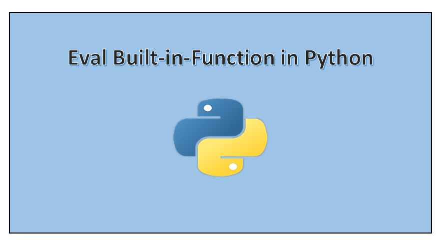
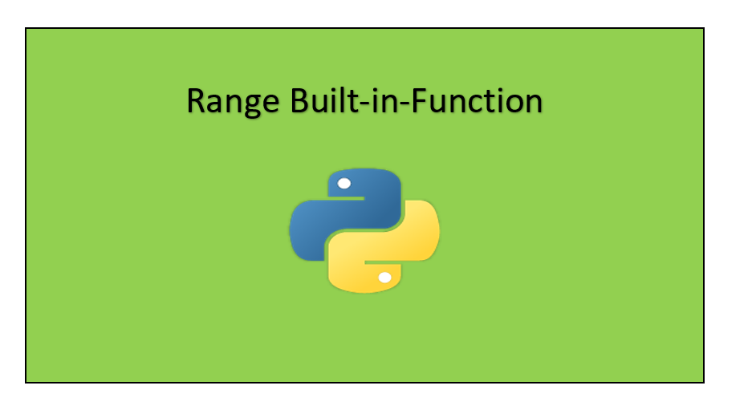

Welcome to my publications page
I have written 22 articles till date
1) Mastering the features of Google Colaboratory !!!

Published on Jun 17 · 6 min read
+ Description
Google Colaboratory is a research tool for data science and machine learning. It’s a jupyter notebook environment that requires no setup to use. It is by far one of the most top tools especially for data scientists because you don’t have to manually install all the packages and libraries, just import them directly by calling them. Whereas in normal IDE you have to manually install the libraries. And moreover notebooks are meant for code and explanation, it often should look like a blog post. I have been using Google colab from past two months and it has been the best tool for me. In this blog, I would be giving you guys some tips and tricks about mastering the Google Colab. Stay tuned read all the points, these were the features which even I was struggling to implement at the first place, now I mastered it. Let’s see the top best features of Google Colab notebook.
2) Data Cleaning using Python with Pandas Library.

Published on Jun 21 · 4 min read
+ Description
Even though this tutorial is small, but it’s a good way to start on small things and get our hands dirty later on. I will make sure that everyone with no prior experience in python programming or don’t know what is data science or data cleaning can easily understand this tutorial. I did not know python in the first place, so even for me, this was a good place to start. One thing with python is that the code is self-explanatory, your focus should not be what the code does, because the code pretty much says what it does, rather you should tell why did you choose to do this, the “why” factor is important than the “what” factor.
3) Manipulating the data with Pandas using Python.

Published on Jul 3 · 8 min read
+ Description
Before getting started let me introduce you Pandas, Pandas is a python library which provided high-performance, easy to use data structures such as series, Data Frame and Panel for data analysis tools for Python programming language. In order to use the pandas library and its data structures all, you have to do it to install it and import it. See the documentation of the Pandas library for more better understanding and installing guidance.
4) Python Lists from Scratch !!!

Published on Jul 10 · 8 min read
+ Description
The list is a data structure in Python which acts as a container to hold or store multiple data at the same time. Lists are mutable or changeable and ordered sequence of elements. To know more about Python Lists you can visit the official Python Lists documentation. One thing you have to keep in mind is that often we must declare lists using [ ] brackets. The elements inside the [ ] are the values of the list.
5) Python Pandas Data Frame Basics.

Published on Jul 17 · 6 min read
+ Description
Before getting started let me introduce you about Pandas, Pandas is a python library that provides high-performance, easy-to-use data structures such as a series, Data Frame and Panel for data analysis tools for Python programming language. Moreover, Pandas Data Frame consists of main components, the data, rows, and columns. To use the pandas library and its data structures, all you have to do it to install it and import it. See the documentation of the Pandas library for a better understanding and installing guidance. Here the entire code can be found on my GitHub page.
6) Web Scraping Using Python Libraries.

Published on Jul 17 · 6 min read
+ Description
Today we will be scraping “Rate My Professor” website. A little insight about Rate My Professor website, it is a website that contains a rating of school, professors and universities. You can search for any professor or school and get their ratings before taking or joining to their courses. It’s a handy feature which helps to know more about your professor or the university that you want to join. In this tutorial, we shall see how to scrape and to extract a specific professor’s tag. I warn you guys this is not illegal but the mass scraping of data from the website can lead your IP address being blocked. Just do it once or twice, but don’t just foolishly put it in a loop and try to put request inside the loop.
7) Scraping two YouTube accounts using python libraries.
Published on Aug 1 · 5 min read
+ Description
I have chosen to scrape two YouTube accounts, named “PewDiePie” and “T-Series,” and report the subscriber difference. I have been a diehard fan of PewDiePie for the past 4 years, and he was the number one YouTuber in terms of his subscribers, up until the last six to ten months. At this point, T-series arrived and eventually outperformed and dethroned PewDiePie, setting a record and becoming the most subscribed channel (apart from YouTube’s own music channel). I did not like T-Series taking over, or how the sub-gap between T-Series and PewDiePie continues to increase drastically. In addition, this subscription gap was one of the biggest controversies in YouTube’s history, which is another reason why I chose to scrape this data. I have a strong feeling that eventually PewDiePie will surpass T-Series again, and remain as the number one YouTuber forever. Scraping these accounts and determining the subscriber gap will allow me to state with accuracy how close PewDiePie is to regain the title of the most subscribed YouTuber.
8) Exploratory data analysis in Python.

Published on Aug 10 · 9 min read
+ Description
Exploratory Data Analysis or (EDA) is understanding the data sets by summarizing their main characteristics often plotting them visually. This step is very important especially when we arrive at modeling the data in order to apply Machine learning. Plotting in EDA consists of Histograms, Box plot, Scatter plot and many more. It often takes much time to explore the data. Through the process of EDA, we can ask to define the problem statement or definition on our data set which is very important.
9) Python Strings from scratch !!!

Published on Aug 12 · 4 min read
+ Description
Strings are a sequence of characters which can be stored either as a constant or a different variable. Strings are considered as a datatype. Typically, programmers must enclose strings in quotation marks for the data to recognized as a string and not a number or variable name. Shown below are some of the most used string methods on a daily basis and are one of the most commonly asked interview questions. Also, the code can be found on my GitHub page.
10) Python Tuples from Scratch !!!
Published on Aug 16 · 5 min read
+ Description
Before starting I would like to tell you, I will write this tutorial in a question-and-answer format because it will be helpful especially during interviews. And throughout the tutorial, I will work only on a single example to maintain the uniformity. The entire code of this tutorial can be found on my GitHub page.
11) Exploring the data using python.
Published on Aug 29 · 11 min read
+ Description
In this tutorial, we will use the exploratory data analysis approach to summarize and analyze the main characteristics of a cars data set.Let us understand how to explore the data using python and later build a machine learning model on that data in the next tutorial. The entire code for this tutorial can be found on my GitHub repository.
12) Building a Machine Learning Model to Predict the Price of the Car

Published on Sep 4 · 14 min read
+ Description
In this tutorial, we will learn how to build a machine learning model using python which predicts the price of the cars.
13) Python Dictionary from Scratch!!!
Published on Sep 9 · 4 min read
+ Description
Dictionary in python comprises an unordered collection of data stored in a key: value format. Dictionary is also known as “Associative memories” or “Associative arrays”. In a dictionary, the key must always be unique. Whereas the values can be repeated and can be of any data type. The key-value pair should be represented as “key: value” (: colon is a must). Shown below are some most used dictionary methods and are one of the most commonly asked interview questions. Also, the code can be found on my GitHub page.
14) 8-Minute Crash Course on Kotlin Programming Language.

Published on Sep 13 · 8 min read
+ Description
Kotlin is a cross-platform, statically typed and general-purpose programming language. I know that I have used some vague terms let me clarify it. Cross-platform: It means that the system or the product can work across multiple platforms or operating system environments. For example Microsoft Excel, Word, Powerpoint works on both Windows and Macintosh Operating systems. Statically typed: Statically typed means that the variables used in the program must explicitly be declared along with their types (data type). For example, C, Java, Kotlin and many more are statically typed. Consider the below C programming code for statically typed programming.
15) Predicting PewDiePie’s daily subscribers using Linear Regression.
Published on Sep 25 · 8 min read
+ Description
PewDiePie is a Swedish YouTuber and has 100 million subscribers on YouTube (He is my favorite). He gains thousands of subscribers every day, so I thought of writing a tutorial about his gain in subscribers. So I wanted to show you guys a practical implementation of Machine Learning’s Linear Regression Algorithm. Here we can apply linear regression to predict his daily YouTube subscribers. I will guide you guys throughout this tutorial how to do so. The entire code for this tutorial can be found on my GitHub. I will not explain the theory behind linear regression algorithms, because, according to me, the theory is not so important only the implementation is very important, because you need to know how and where to apply the algorithm.
16) Top Python Libraries Used In Data Science

Published on Oct 2 · 9 min read
+ Description
Data Science, as you all know, it is the process involved in studying the data. Yes, all you got to do is study the data and get new insights from the data. Here there is no need to focus on applying from scratch or learning new algorithms, all you need to know is learn how to approach the data and solve the problem. One of the key things that you need to know is using appropriate libraries to solve a data science problem. This article is all about providing the context to the important libraries used in Data Science. Before dwelling into the topic I would like to introduce the 5 primitive steps involved in solving a data science problem. Now I have sat down and designed these steps from scratch, so there is no right or wrong answer, the correct answer depends on how you approach the data.
17) Android Animation Using Kotlin

Published on Oct 6 · 7 min read
+ Description
In this tutorial, you will learn an easy way to perform animation in Android Studio using Kotlin programming language. I have tried my level best to provide good documentation and all the guidance to make this tutorial more readable.
18) How to get started coding in Python?

Published on Oct 11 · 7 min read
+ Description
So friends let us learn all the things that you need to get started before actually coding in python and what all things that you need to know to become a good python programmer, what resources you need to master the programming language. This is not a coding tutorial, I will not be teaching you guys how to code in Python, rather I will share you some ideas, resources brief through some steps that you need to follow to become a good programmer. I’ll try not to make you feel bored, I’ll provide you with all the links of tutorials, books, GitHub repositories, and many more. Because it doesn’t matter how you learn the content but all that matters is whether you know the concepts. Don’t worry for all those beginners who have never coded in python before this tutorial is mainly for you, because this is the right place to get started. I will give you insights about my experience and make you master python programming. I’m again repeating this is not a coding tutorial because I cannot teach you python from scratch in one stretch, however, I will provide you enough content to get you started.
19) Python eval() built-in-function

Published on Oct 18 · 3 min read
+ Description
This would be a short article about eval function in python, wherein I would be explaining to you about eval function, its syntax, and few questions that are often asked in interviews so that you clearly understand it and answer those questions in ease.
20) Python range() built-in-function

Published on Oct 25 · 5 min read
+ Description
Now let us understand the concept of range function() in python, below shown are the concepts along with examples that will help you guys to understand the range() in a clear way.
21) Using the Pandas Data Frame as a Database.

Published on Nov 1 · 6 min read
+ Description
Before starting let me quickly tell about the pandas data frame: It is a python library that provides high performance, and easy-to-use data structure for data analysis tools for python programming language. Below is an article that explains the primitive manipulations performed on the pandas data frame.
22) Is Python object-oriented?
Published on Nov 5 · 4 min read
+ Description
Well Is Python an object oriented programming language? Yes, it is. With the exception of control flow, everything in Python is an object. By Max Fischer, who answers this question in Quora.